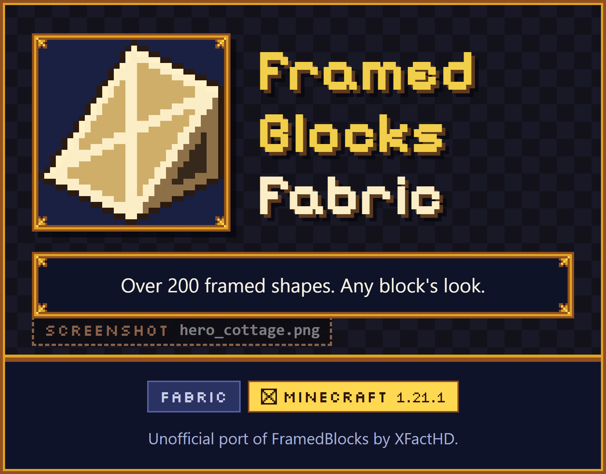
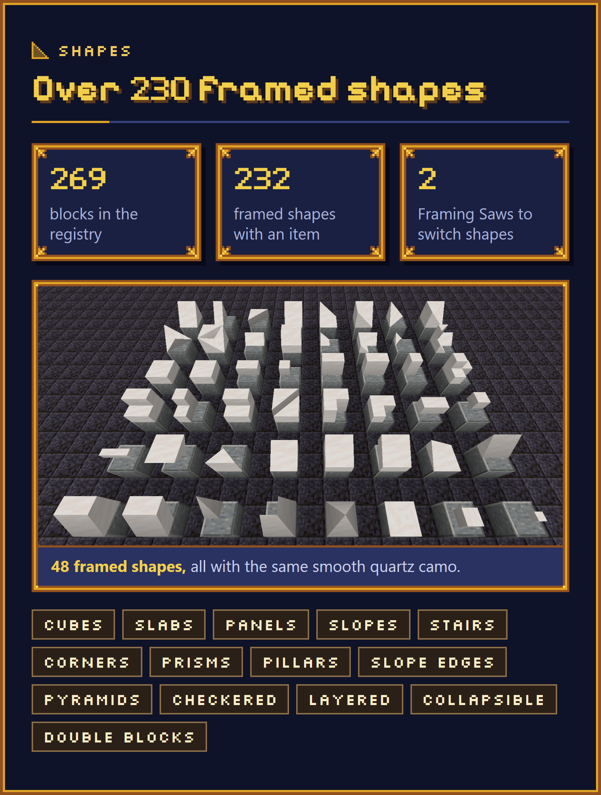
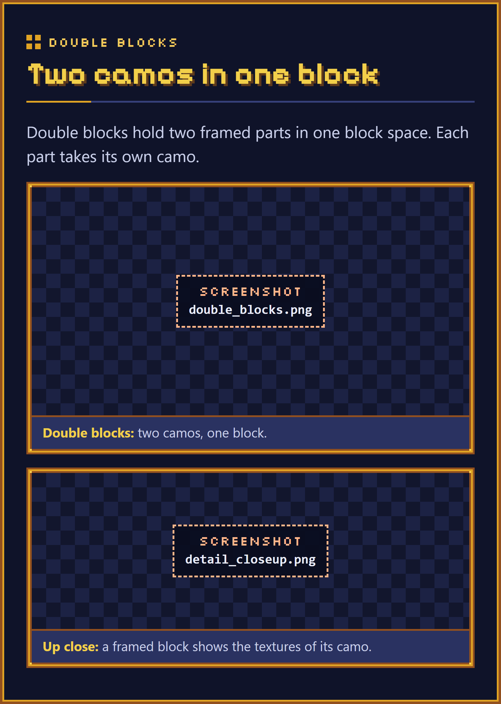
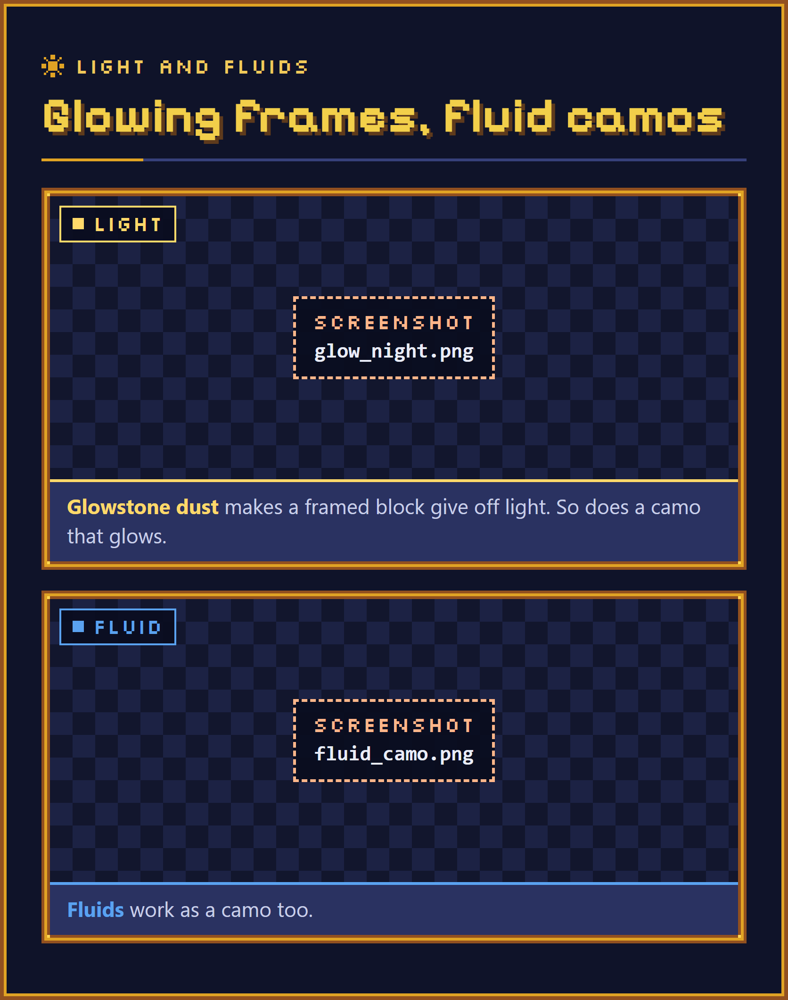
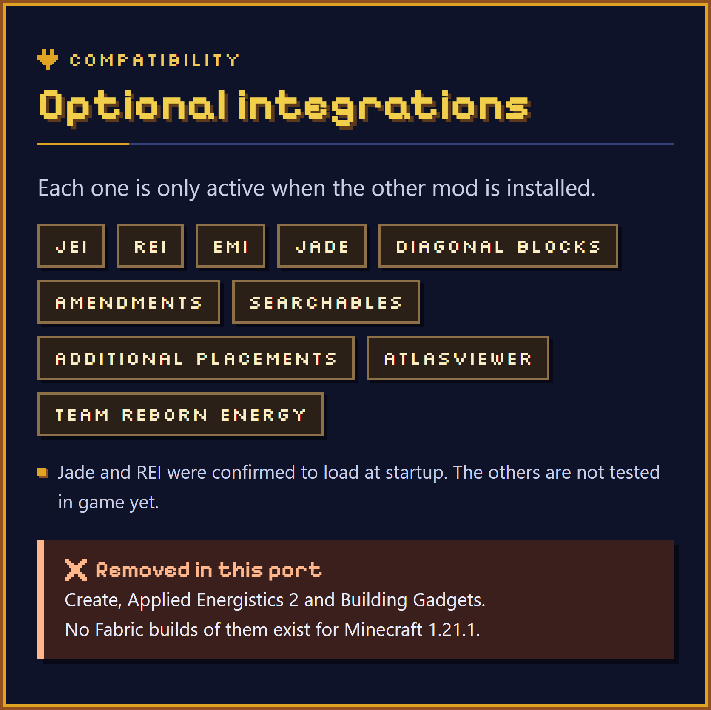
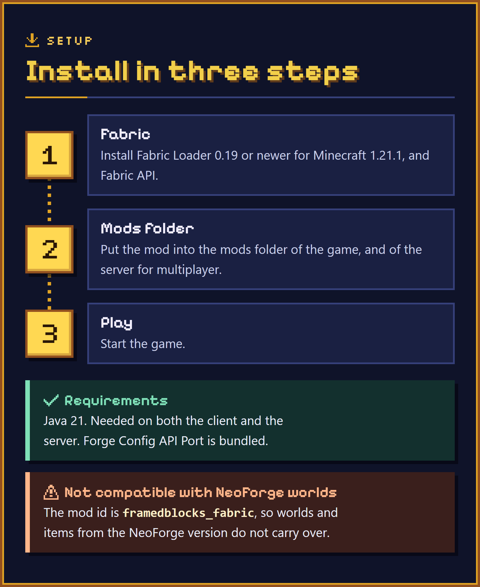
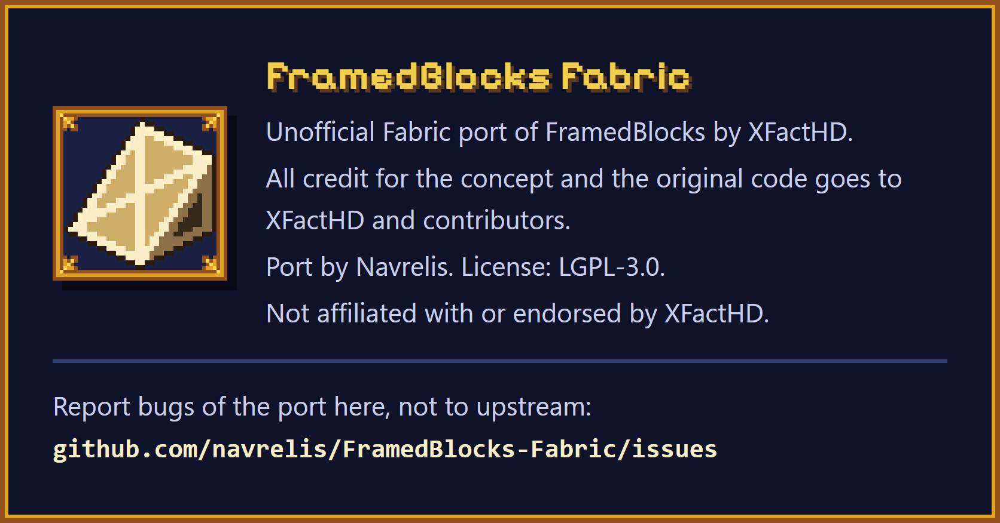

Card above: 01-hero.png. The text between the cards is in description.template.md (node tools/preview-description.mjs).
![Any block, any shape. A new framed block is an empty wooden frame. Two pictures of the same eight framed shapes, among them a slope, stairs and a corner slope: before, empty wooden frames; after, each one has a different camo, such as oak planks, stone bricks, copper, cherry planks and sandstone. Right-click with a block: the framed block takes the look of the block in your hand. Fluids work too. Take it off: the Framed Hammer removes the camo again. Not accepted as camo: blocks with block entities and untagged non-solid blocks.](img/02-camo.png "02-camo.png")
Card above: 02-camo.png. The text between the cards is in description.template.md (node tools/preview-description.mjs).

Card above: 03-shapes.png. The text between the cards is in description.template.md (node tools/preview-description.mjs).

Card above: 04-double.png. The text between the cards is in description.template.md (node tools/preview-description.mjs).

Card above: 05-light-fluids.png. The text between the cards is in description.template.md (node tools/preview-description.mjs).
![Framed blocks that work. A picture of framed functional blocks with wood and stone camos: a sign with text, an item frame holding a Framed Hammer, a door, a button, a wall torch, a lever, a chest, a flower pot with a poppy, a pressure plate, two rail slopes, a fence gate and three lanterns. Doors, iron doors, signs, hanging signs, item frames, lanterns, torches, levers, flower pots and bars, each shown with its item. Also: trapdoors, gates, fences, walls, ladders, buttons, pressure plates, bookshelves, chests, hoppers, secret storage, tanks, panes, a lightning rod, a target block, a bouncy cube, a redstone block, rails and rail slopes.](img/06-functional.png "06-functional.png")
Card above: 06-functional.png. The text between the cards is in description.template.md (node tools/preview-description.mjs).
![Tools and upgrades. Each shown with its item. Framed Hammer: removes the camo and toggles options such as waterlogging. Framed Wrench: rotates blocks and switches some shape variants. Framed Screwdriver: rotates the camo texture. Framed Key: locks the state of a block. Framed Blueprint: copies a framed block with its camo; the materials must be in your inventory. Upgrades, each shown with its item: glowstone dust, the block gives off light. Framed Reinforcement: blast resistance of obsidian, and the camo no longer burns; a pickaxe that can mine obsidian removes it. Phantom Paste: the block becomes intangible (server config option).](img/07-tools.png "07-tools.png")
Card above: 07-tools.png. The text between the cards is in description.template.md (node tools/preview-description.mjs).
![Switch shapes with the Framing Saw. A picture of the Framing Saw screen: framed cubes in the input slot, the slope recipe selected in the searchable recipe list, framed slopes in the output slot. Framing Saw: turns framed blocks into other framed shapes, by material value. Powered Framing Saw: works without energy by default. With the optional Team Reborn Energy installed, other mods can feed energy into the Powered Framing Saw from every side except the top. It never outputs energy. The server config option poweredSawRequiresEnergy, false by default, makes energy required.](img/08-saw.png "08-saw.png")
Card above: 08-saw.png. The text between the cards is in description.template.md (node tools/preview-description.mjs).

Card above: 09-compat.png. The text between the cards is in description.template.md (node tools/preview-description.mjs).

Card above: 10-install.png. The text between the cards is in description.template.md (node tools/preview-description.mjs).

Card above: 11-credits.png. The text between the cards is in description.template.md (node tools/preview-description.mjs).